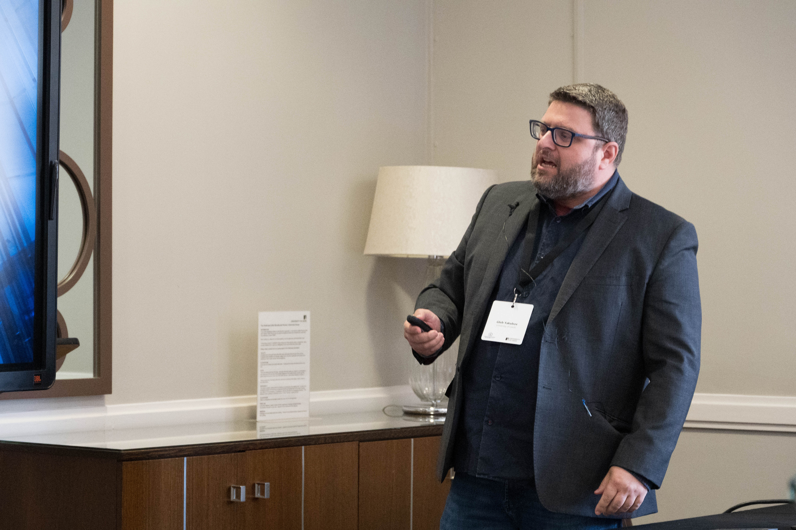
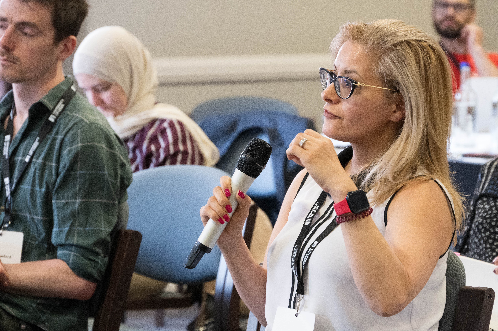
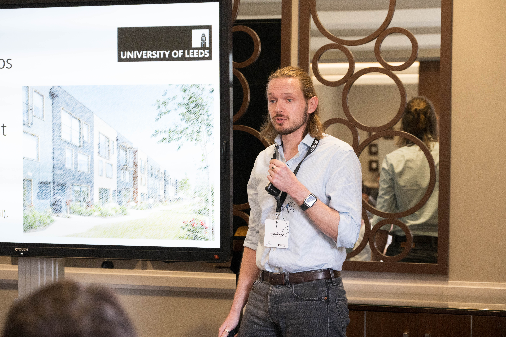

Updates and insights from our innovative research projects focused on healthy building environments.

We're thrilled to share an update on our four funded pump-priming projects, each exploring a unique angle on how building environments impact health and well-being. From air quality monitoring in historical structures to occupant-centric sensor feedback, these projects are already uncovering valuable insights.
The principal investigators recently hosted a collaborative "review and reflect" session, comparing lessons learned from each pilot study and identifying opportunities for future research. This cross-disciplinary exchange has been instrumental in creating a holistic picture of healthy buildings research at Leeds.
"The beauty of these diverse projects is how they complement each other. We're building a comprehensive understanding of healthy buildings from multiple angles—technical, social, and practical."

The Living in Clover team has successfully established their first test plots featuring three different clover species. Initial thermal imaging results are promising, showing significant heat reduction compared to conventional roof materials. The team has also developed a preliminary lifecycle assessment framework for green roof installations.
Lead: Prof. Gleb Yakubov
Project Details
The ThermoAge project has completed its first set of climate chamber experiments with participants aged 55+. Early data indicates significant changes in postural stability at both temperature extremes (14°C and 30°C), with particularly notable effects in the cold condition. The team has also established a promising collaboration with Leeds City Council's Age-Friendly Housing initiative.
Lead: Dr. Sally Shahzad
Project DetailsThe Human-Centered Housing project has conducted 15 in-depth interviews with residents of affordable housing developments, revealing important patterns in how design features affect daily routines and perceived wellbeing. Their innovative spatial mapping approach has identified several "high impact zones" within homes that disproportionately influence resident satisfaction and health behaviors.
Lead: Dr. Alexa Ruppertsberg
Project Details
The Indoor-Outdoor Air team has successfully deployed their sensor network in two Passive House dwellings. Initial data shows fascinating patterns in how outdoor pollution events interact with MVHR systems. The team has developed an effective occupant diary system that balances comprehensive data collection with minimal user burden.
Leads: Dr. Douglas Booker & Dr. Alexa Ruppertsberg
Project DetailsAll projects have highlighted how building occupants adapt to, modify, and interact with their environments in ways that significantly impact building performance and health outcomes.
Multiple projects identified tensions between energy efficiency goals and adequate ventilation practices, pointing to the need for more nuanced approaches to MVHR systems.
A common finding across projects is that vulnerable populations (elderly, children, those with respiratory conditions) have specific needs that are often overlooked in standard building design.
Smart sensors and feedback systems show promise, but must be designed with user experience and accessibility as priorities to ensure adoption and effectiveness.
Based on the preliminary findings from these pump-priming projects, we've identified several promising avenues for future research:
Developing comprehensive monitoring systems that simultaneously track environmental conditions, occupant behaviors, and health metrics to establish clear cause-effect relationships.
Exploring automated systems that adjust building parameters based on occupant needs, activity patterns, and environmental conditions while maintaining energy efficiency.
Scaling up successful interventions to neighborhood and community levels, examining how collective approaches to healthy buildings can amplify benefits and address equity concerns.
We're planning a comprehensive showcase event in October 2025 where all project teams will present their final findings. This event will also launch our next round of pump-priming funding. Sign up to our newsletter or join our network to stay informed.

Director, Healthy Buildings Network Leeds
Dr. King leads the Healthy Buildings Network at the University of Leeds, bringing together expertise from engineering, architecture, health sciences, and social sciences to address complex challenges in the built environment.

How our perception of comfort impacts building design and energy use

A review of innovative approaches to improving indoor air quality

Exploring how different cultures interpret and implement nature-inspired design principles in the built environment